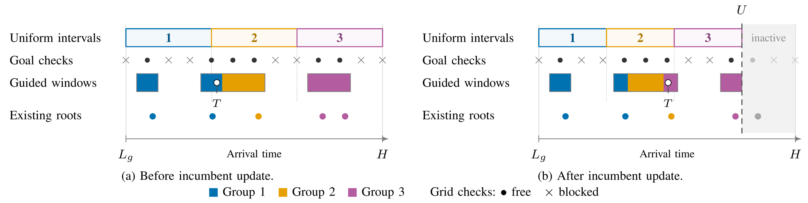

Interval root
Uniform sampling preserves coverage of candidate arrival times. Goal collision checks suggest guided sampling windows, and the planner collision-checks every sampled root. An earlier solution lowers the arrival bound while preserving useful search trees.

Guarantees: for a single goal in a bounded horizon, interval root is probabilistically complete for positive-clearance solutions and asymptotically optimal in arrival time when robust solutions approach the optimum. The analysis assumes unlimited sampling and storage, fair worker scheduling, and sound local collision validation that accepts sufficiently short collision-free motions.